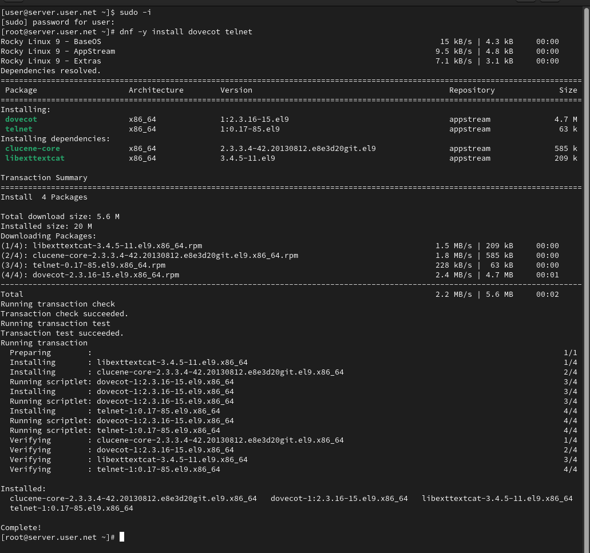
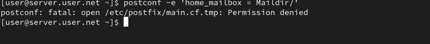
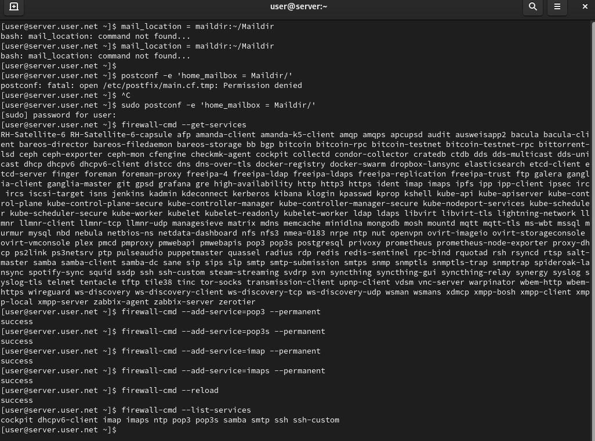
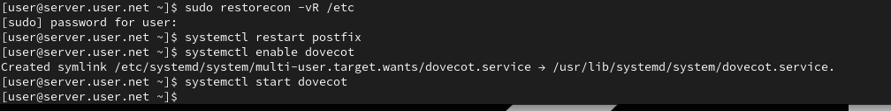
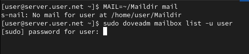
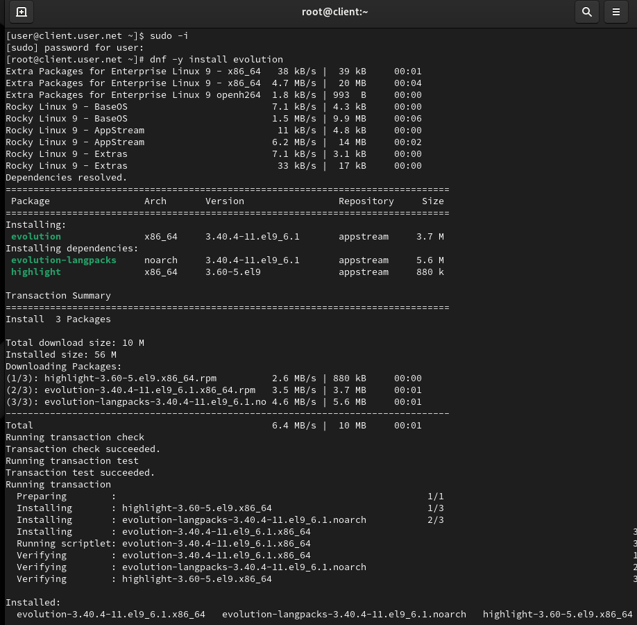
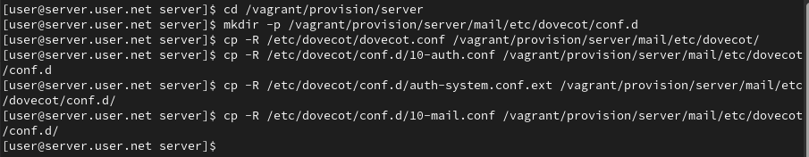
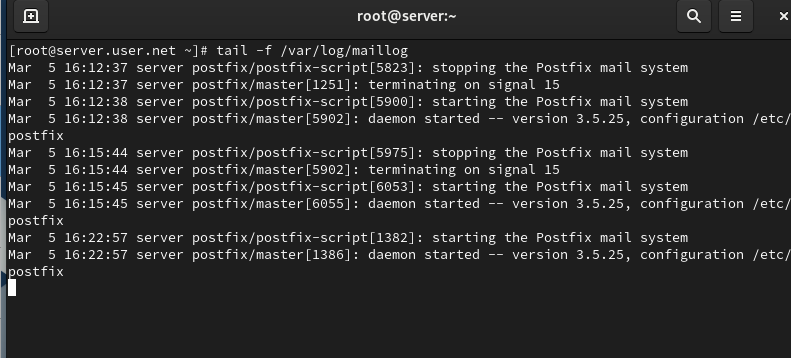

Целью данной работы является приобретение практических навыков по установке и простейшему конфигурированию POP3/IMAP-сервера.
На виртуальной машине server войдём под нашим пользователем и откроем терминал. Перейдём в режим суперпользователя и установим необходимые для работы пакеты (рис. @fig-1):

В Postfix зададим каталог для доставки почты. Сконфигурируем межсетевой экран, разрешив работать службам протоколов POP3 и IMAP (рис. @fig-2):

Восстановим контекст безопасности в SELinux. Перезапустим Postfix и запустим Dovecot (рис. @fig-3):

На терминале сервера просмотрим имеющуюся почту и mailbox пользователя (рис. @fig-4):

На виртуальной машине client установим почтовый клиент Evolution, запустим и настроим его для работы с нашим почтовым сервером (рис. @fig-5):

Из почтового клиента отправим себе несколько тестовых писем и убедимся, что они доставлены. Параллельно посмотрим сообщения при мониторинге почтовой службы на сервере (рис. @fig-6):

Проверим работу почтовой службы, используя на сервере протокол Telnet: подключимся к почтовому серверу по протоколу POP3, получим список писем, прочитаем первое письмо и удалим второе (рис. @fig-7):

На виртуальной машине server перейдём в каталог для внесения изменений в настройки внутреннего окружения, поместим конфигурационные файлы Dovecot и заменим конфигурационный файл Postfix. Внесём изменения в файл mail.sh на сервере и клиенте (рис. @fig-8):

В ходе выполнения лабораторной работы были приобретены практические навыки по установке и простейшему конфигурированию POP3/IMAP-сервера.
За что отвечает протокол SMTP?
Отвечает за отправку электронной почты. Этот протокол используется для
передачи писем от отправителя к почтовому серверу и от сервера к
серверу.
За что отвечает протокол IMAP?
Отвечает за доступ и управление электронной почтой на сервере. Позволяет
клиентским приложениям просматривать, синхронизировать и управлять
сообщениями, хранящимися на почтовом сервере.
За что отвечает протокол POP3?
Отвечает за получение электронной почты. Письма загружаются с почтового
сервера на клиентский компьютер, и после этого они обычно удаляются с
сервера (но это можно настроить).
В чём назначение Dovecot?
Это почтовый сервер, который предоставляет поддержку протоколов IMAP и
POP3. Dovecot обеспечивает доступ к электронной почте на сервере, а
также хранение и управление сообщениями.
В каких файлах обычно находятся настройки работы Dovecot? За что отвечает каждый из файлов?
/etc/dovecot/dovecot.conf: Основной файл конфигурации
Dovecot./etc/dovecot/conf.d/: Дополнительные файлы
конфигурации, разделенные на отдельные модули.В чём назначение Postfix?
Это почтовый сервер (MTA - Mail Transfer Agent), отвечающий за отправку
и маршрутизацию электронной почты.
Какие методы аутентификации пользователей можно использовать в Dovecot и в чём их отличие?
Приведите пример заголовка письма с пояснениями его полей.